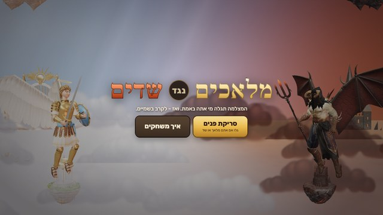
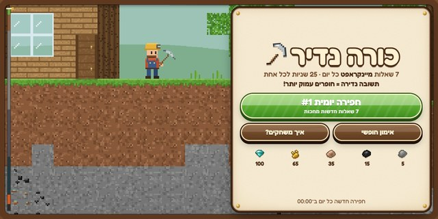
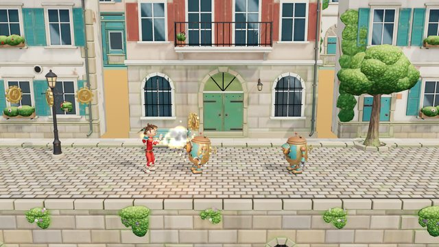
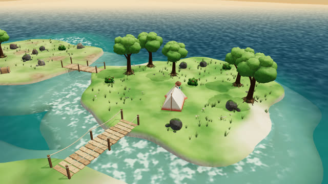

מלאכים נגד שדים
סורק הנשמות מגלה אם אתם מלאך או שד - ואז קרב בשמיים: מצב צבא, מצב התפתחות, ושלב בלתי אפשרי להשיג את הפרס

כורה נדיר
חפירה יומית של שאלות מיינקראפט: תשובה נדירה = חופרים עמוק יותר! מוקדש ליהל רוט.

סערת כוחות
גיבור־על בעיר של רובוטי שעון: אש, תעופה, קרח וברק נגד מלך השעונים. מוקדש לעילי שי.

אי אחרי אי
הרפתקת איים בתלת־ממד: חוטבים, כורים, בונים, קונים עוד איים ומדליקים את המגדלור העתיק.